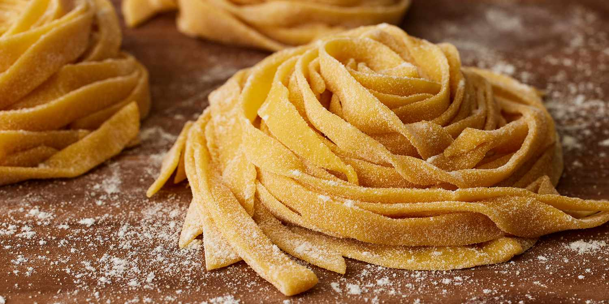

Homemade Pasta

Ingredients
- 300g ‘00’ pasta flour, plus extra for dusting
- 2 eggs and 4 yolks, lightly beaten
- semolina flour, for dusting
Steps
- Put the flour in a food processor with ¾ of your egg mixture and a pinch of salt. Blitz to large crumbs – they should come together to form a dough when squeezed (if it feels a little dry gradually add a bit more egg). Tip the dough onto a lightly floured surface, knead for 1 min or until nice and smooth – don’t worry if it’s quite firm as it will soften when it rests. Cover with cling film and leave to rest for 30 mins.
- Cut away ¼ of the dough (keep the rest covered with cling film) and feed it through the widest setting on your pasta machine. (If you don’t have a machine, use a heavy rolling pin to roll the dough as thinly as possible.) Then fold into three, give the dough a quarter turn and feed through the pasta machine again. Repeat this process once more then continue to pass the dough through the machine, progressively narrowing the rollers, one notch at a time, until you have a smooth sheet of pasta. On the narrowest setting, feed the sheet through twice.
- Cut as required to use for filled pastas like tortellini, or cut into lengths to make spaghetti, linguine, tagliatelle, or pappardelle. Then, dust in semolina flour and set aside, or hang until dry (an hour will be enough time.) Store in a sealed container in the fridge and use within a couple of days, or freeze for 1 month.
Homepage